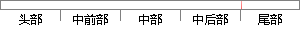

,data=trainset,method = "class")
片段位置图

相似结果|
1
原句片段：,data=trainset,method = "class")
相似片段 1：I have never been able to get class probabilities to work and I am ...rbfSVM <- train(outcome~., data = trainset, method="svmRadial", ...
相似片段 2：data set, you feed the six-item test data set...RadialTrainProgram.cs and Visual Studio ...method, the demo has a RadialNetwork class that...
相似片段 3：The class MLData is implemented to easily load the data for training one ... The method returns a pointer to the matrix of predictor and response ...
相似片段 4：The class MLData is implemented to easily load the data for training one ... The method returns a pointer to the matrix of predictor and response ...
|
※ 片段修改建议 ※
近似词参考：